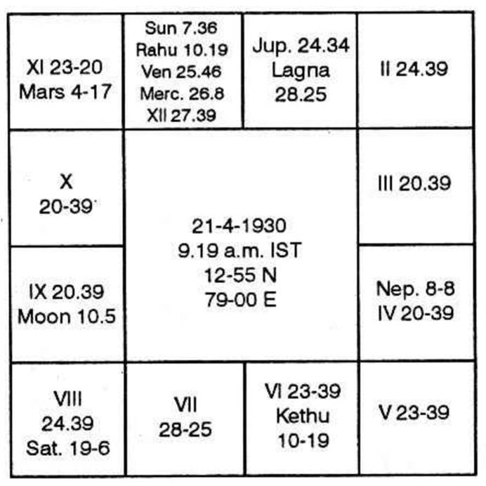

Higher studies is indicated by 9th house. During the period or subperiod of the significator of 9th house one will persecute studies further.
Stay in a foreign country is to be judged from 12th house for further studies 9th and for job 6 and 10 also.
Scholarship is a non-refundable loan with a string attached to it. Hence judge houses 6 and 11.
Horoscope is as follows:

Moon Dasa balance years 9-11-7 days.
Jupiter Dasa Saturn Bhukti is from 16-5-1967 to 28-11-1969.
9th cusp is at 20°39′ Capricorn-Nirayana. It is in Moon star – Venus sub. Moon is the lord of 3. It alone is in its constellation, and own sub. It shows one's inclination. Sub lord of 9th cusp is Venus. It is in 11. It is in its own constellation. It shows fulfilment of one's desire and success in efforts.
Therefore you will have higher studies. There is no planet in 9th house. Saturn is the owner. Mars is in Saturn star, Mars is the significator of 9th house. Rahu is to act as an agent of Mars. So, long journey and higher studies are shown by Saturn and Mars.
12th house shows life in a foreign place. Jupiter is in 12. No planet is in Jupiter star. Hence Jupiter will give life in a foreign place.
6th house is unoccupied. It is owned by Venus. Kethu represents Venus. Sun and Rahu are in Kethu star, Saturn is in Venus star.
11th house is occupied by a majority of planets. Of them Rahu is the strongest. It is in the sub of Saturn. Hence Rahu will offer the result of taking loan – 6th house matter.
Rahu and Kethu give 6th and 11th house results. Both will contribute for scholarship. Therefore Jupiter Dasa Saturn Bhukti Rahu Anthra Kethu Shookshma gives scholarship, long journey, life in a foreign place, higher studies, etc. It will be around 24-5-1969.
Transit: Saturn, lord of 9 conjoins lord of 4 Sun. Jupiter will be stationary and take direct course in the constellation of Moon indicating 3rd house for short journey and leaving one's permanent place of residence.